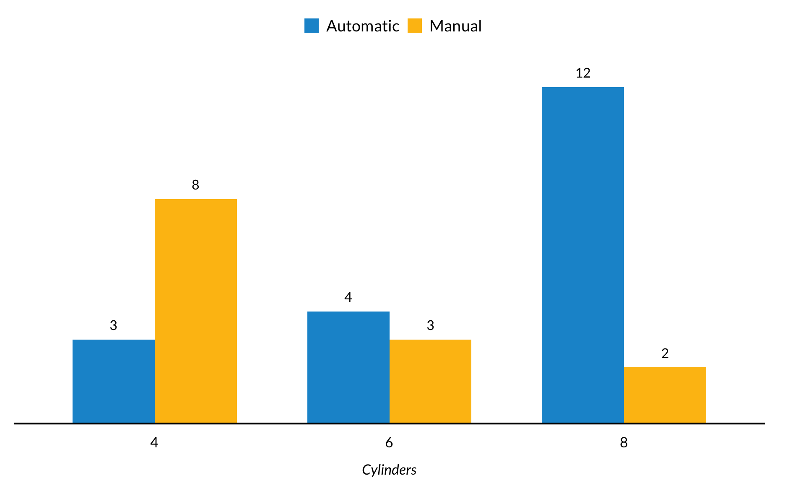
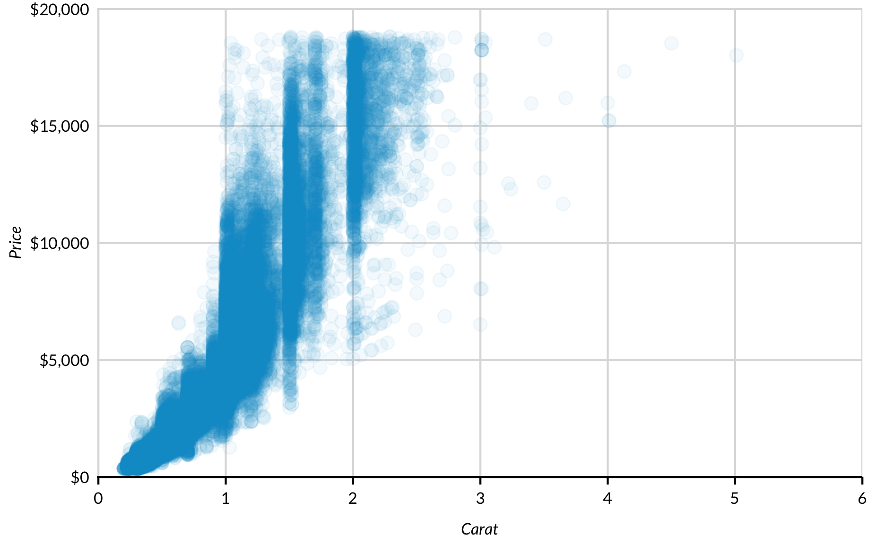
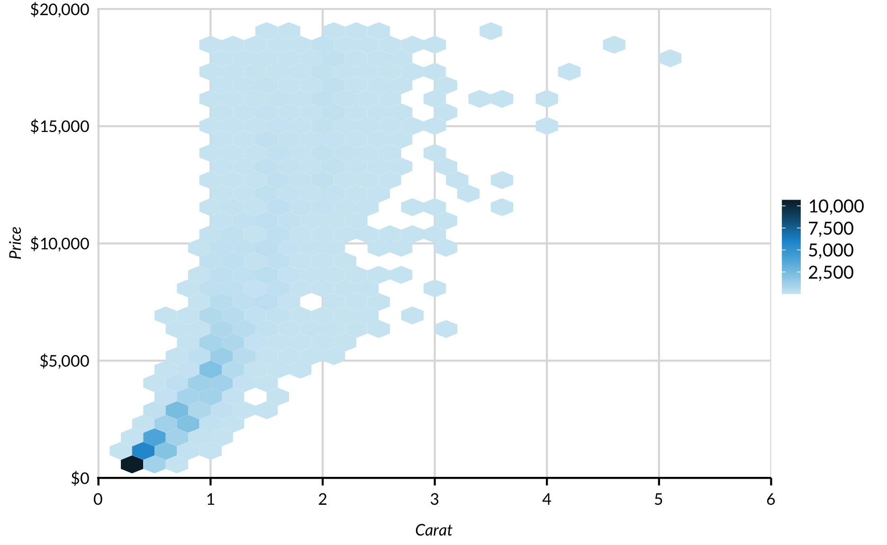
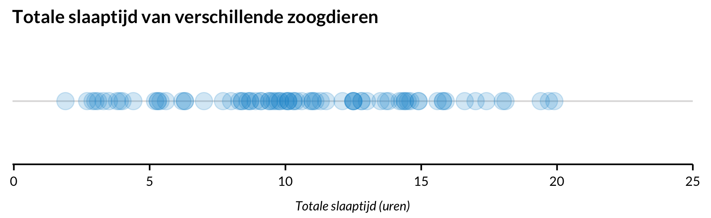
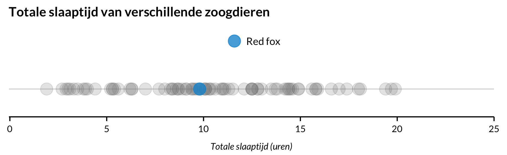
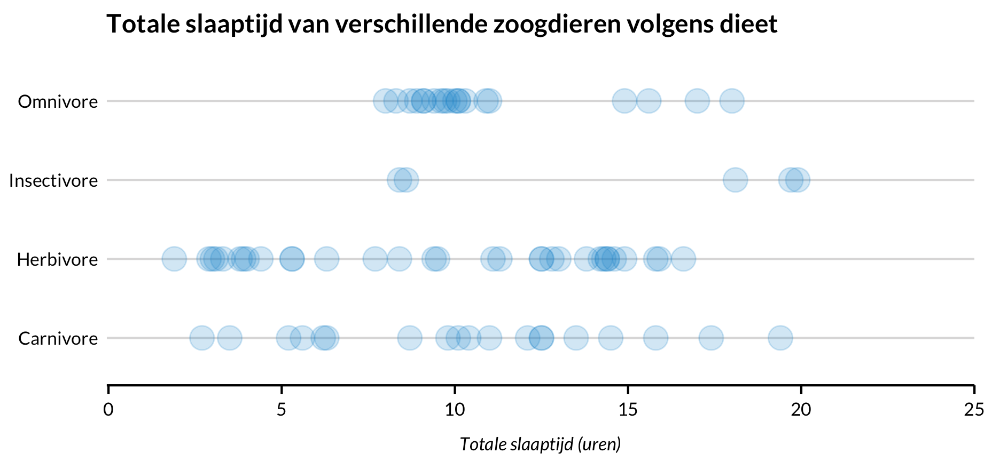

R is een krachtige, open-source programmeertaal en -omgeving. R blinkt uit in databeheer en bewerking, traditionele statistische analyse, machine learning en reproduceerbaar onderzoek. Maar is waarschijnlijk nog het meest bekend om zijn grafieken. In deze blog staan voorbeelden en instructies voor populaire en minder bekende plottechnieken in R. Het bevat ook instructies voor het gebruik van urbnthemes, het R-pakket van het Urban Institute voor het maken van bijna-publicatie-klare plots met ggplot2. Als u vragen heeft, zo staat op hun site, aarzel dan niet om contact op te nemen met Aaron Williams of Kyle Ueyama.
Background
Het R-pakket (library(urbnthemes)) maakt ggplot2 output dat verbonden is met Urban Institute’s Data Visualisatie stijl gids. Tzijn pakket produceert ** geen publicatieklare grafieken**. Visuele stijlen moeten nog steeds worden bewerkt met behulp van de normale bewerkingsworkflow van het project. Door grafieken te exporteren als pdf kunnen ze gemakkelijker worden bewerkt. Zie de sectie Plots opslaan voor meer informatie.
Het vaste thema dat hier gebruikt wordt is getest met ggplot2 versie 3.0.0. Het zal niet goed functioneren met oudere versies van ggplot2.
Gebruik library(urbnthemes)
Je moet in ieder geval de volgende code gebruiken om urbnthemes te installeren of te updaten:
# install.packages("devtools")
# devtools::install_github("UrbanInstitute/urbnthemes")Voer de volgende code bovenaan elk script uit. Als je dit hebt gedaan, kun je aan de slag:
library(tidyverse)
library(urbnthemes)
library(ggrepel)
library(extrafont)
set_urbn_defaults(style = "print")IAls het nog niet is geïnstalleerd, installeer dan het gratis Lato-lettertype van Google-lettertypen. Als je op een Mac werkt sla je Lato op in je font-book. Als je op Windows werkt, moet je eerst Ghostscript installeren. Vertel dan in R waar uw ghostscript-bestand zich bevindt. Bewerk het bestandspad als het uwe zich op een andere plaats bevindt.
Sys.setenv(R_GSCMD="C:/Program Files/gs/gs9.05/bin/gswin32c.exe")Voer dit script één keer uit om Lato te importeren en te registreren:
# install.packages(c("ggplot2", "ggrepel", "extrafont"))
# urbnthemes::lato_install()Het laden en importeren van dit lettertype kan enkele minuten duren.
Grammar of Graphics en de conventies
Hadley Wickham’s ggplot2 is gebaseerd op Leland Wilkinsons The Grammar of Graphics en Wickhams A Layered Grammar of Graphics. De gelaagde Grammer of Graphics is een gestructureerde manier van denken over de componenten van een plot, die zich vervolgens lenen voor de eenvoudige structuur van ggplot2.
- Data zijn wat in een plot wordt gevisualiseerd en mappings zijn aanwijzingen voor hoe gegevens in een plot in kaart worden gebracht op een manier die door de mens kan worden waargenomen.
- Gegevens zijn weergaven van de werkelijke gegevens zoals punten, lijnen en balken.
- Statistieken zijn statistische transformaties die samenvattingen van de gegevens weergeven, zoals histogrammen.
- Scales kaartwaarden in de dataruimte naar waarden in de esthetische ruimte. Schalen tekenen legendes en assen.
- Coördinatensystemen beschrijven hoe geomen in het vlak van de grafiek in kaart worden gebracht.
- Facetten splitsen de gegevens op in betekenisvolle deelverzamelingen zoals kleine veelvouden. *Thema’s** controleren de fijnere punten van een plot zoals lettertypes, lettergroottes en achtergrondkleuren.
Meer informatie vind je hier: ggplot2: Elegant Graphics for Data Analysis
Tips en trucs
ggplot2verwacht dat de gegevens in dataframes of tibbles zitten. Het heeft de voorkeur dat de dataframes “netjes” zijn met elke variabele als een kolom, elke obseravtion als een rij, en elke observatie-eenheid als een aparte tabel. Dedplyrentidyrbevatten beknopte en effectieve hulpmiddelen voor het “opruimen” van gegevens.R staat toe dat functie-argumenten expliciet bij naam en impliciet bij positie worden aangeroepen. De codeervoorbeelden in deze handleiding bevatten alleen benoemde argumenten voor de duidelijkheid.
Grafieken zullen soms verschillend worden weergeven op verschillende besturingssystemen. Dit zal geen probleem zijn als de afbeeldingen eenmaal zijn opgeslagen.
Doorlopende x-assen hebben tikken. Discrete x-assen hebben geen teken. Gebruik
remove_ticks()om teken te verwijderen.
Staaf grafieken
Een kleur
mtcars %>%
count(cyl) %>%
ggplot(mapping = aes(x = factor(cyl), y = n)) +
geom_col() +
geom_text(mapping = aes(label = n), vjust = -1) +
scale_y_continuous(expand = expand_scale(mult = c(0, 0.1))) +
labs(x = "Cilinders",
y = NULL) +
remove_ticks() +
remove_axis() Een kleur (Geroteerd)
Dit introduceert coord_flip() en remove_axis(axis = "x", flip = TRUE). remove_axis() komt van library(urbnthemes) en creëert een aangepast thema voor geroteerde staafgrafieken.
mtcars %>%
count(cyl) %>%
ggplot(mapping = aes(x = factor(cyl), y = n)) +
geom_col() +
geom_text(mapping = aes(label = n), hjust = -1) +
scale_y_continuous(expand = expand_scale(mult = c(0, 0.1))) +
labs(x = "Cilinders",
y = NULL) +
coord_flip() +
remove_axis(axis = "x", flip = TRUE)Drie kleuren
Dit is identiek aan de vorige grafiek, behalve dat kleuren en een legenda zijn toegevoegd met fill = cyl. Door x om te zetten in een factor met factor(cyl) worden 5 en 7 op de x-as overgeslagen. Het toevoegen van fill = cyl zonder factor() zou een doorlopend kleurenschema en een legenda hebben gecreëerd.
mtcars %>%
mutate(cyl = factor(cyl)) %>%
count(cyl) %>%
ggplot(mapping = aes(x = cyl, y = n, fill = cyl)) +
geom_col() +
geom_text(mapping = aes(label = n), vjust = -1) +
scale_y_continuous(expand = expand_scale(mult = c(0, 0.1))) +
labs(x = "Cylinders",
y = NULL) +
remove_ticks() +
remove_axis()Gestapelde staafgrafiek
Een extra esthetiek kan eenvoudig worden toegevoegd aan de staafgrafiek door fill = categorical variable toe te voegen aan de mapping. Hier toont elk onderdeel een subset van een aantal auto’s met verschillende aantallen cilinders.
mtcars %>%
mutate(am = factor(am, labels = c("Automatic", "Manual")),
cyl = factor(cyl)) %>%
group_by(am) %>%
count(cyl) %>%
group_by(cyl) %>%
arrange(desc(am)) %>%
mutate(label_height = cumsum(n)) %>%
ggplot() +
geom_col(mapping = aes(x = cyl, y = n, fill = am)) +
geom_text(aes(x = cyl, y = label_height - 0.5, label = n, color = am)) +
scale_color_manual(values = c("white", "black")) +
scale_y_continuous(expand = expand_scale(mult = c(0, 0.1))) +
labs(x = "Cylinders",
y = NULL) +
remove_ticks() +
remove_axis() +
guides(color = FALSE)Gestapelde staafgrafiek met Position = Fill
De vorige voorbeelden gebruiken geom_col(), die een y-waarde voor de staafhoogte neemt. Dit voorbeeld gebruikt geom_bar() die de waarden opsomt en een waarde voor de staafhoogte genereert. In dit voorbeeld verandert position = "fill" in geom_bar() de y-as van de telling naar de verhouding van elke staaf.
mtcars %>%
mutate(am = factor(am, labels = c("Automatic", "Manual")),
cyl = factor(cyl)) %>%
ggplot() +
geom_bar(mapping = aes(x = cyl, fill = am), position = "fill") +
scale_y_continuous(expand = expand_scale(mult = c(0, 0.1)), labels = scales::percent) +
labs(x = "Cylinders",
y = NULL) +
remove_ticks() +
guides(color = FALSE)Opgedeelde staafgrafiek
Delen van de staafgrafiek in ggplot2 worden standaard opgestapeld. position = "dodge" in geom_col() breidt het staafdiagram uit zodat de subsets naast elkaar verschijnen.
mtcars %>%
mutate(am = factor(am, labels = c("Automatic", "Manual")),
cyl = factor(cyl)) %>%
group_by(am) %>%
count(cyl) %>%
ggplot(mapping = aes(cyl, y = n, fill = factor(am))) +
geom_col(position = "dodge") +
geom_text(aes(label = n), position = position_dodge(width = 0.7), vjust = -1) +
scale_y_continuous(expand = expand_scale(mult = c(0, 0.1))) +
labs(x = "Cylinders",
y = NULL) +
remove_ticks() +
remove_axis()
Lolly grafiek/Cleveland puntgrafiek
Lolly en Cleveland puntgrafiek zijn minimalistische alternatieven voor staafgrafieken. De sleutel tot beide grafieken is om de gegevens te ordenen op basis van de continue variabele met behulp van arrange() en dan de discrete variabele om te zetten in een factor met de geordende niveaus van de continue variabele met behulp van mutate(). Deze stap “slaat” de volgorde van de gegevens op.
Lollygrafiek
mtcars %>%
rownames_to_column("model") %>%
arrange(mpg) %>%
mutate(model = factor(model, levels = .$model)) %>%
ggplot(aes(mpg, model)) +
geom_segment(aes(x = 0, xend = mpg, y = model, yend = model)) +
geom_point() +
scale_x_continuous(expand = expand_scale(mult = c(0, 0)), limits = c(0, 40)) +
labs(x = NULL,
y = "Miles Per Gallon")Cleveland puntgrafiek
mtcars %>%
rownames_to_column("model") %>%
arrange(mpg) %>%
mutate(model = factor(model, levels = .$model)) %>%
ggplot(aes(mpg, model)) +
geom_point() +
scale_x_continuous(expand = expand_scale(mult = c(0, 0)), limits = c(0, 40)) +
labs(x = NULL,
y = "Miles Per Gallon")Dumbellgrafieken
Puntengrafieken
Een kleur puntengrafiek
Puntengrafieken zijn nuttig voor het tonen van relaties tussen twee of meer variabelen. Gebruik scatter_grid() van library(urbnthemes) om eenvoudig verticale rasterlijnen toe te voegen aan de puntengrafieken.
mtcars %>%
ggplot(mapping = aes(x = wt, y = mpg)) +
geom_point() +
scale_x_continuous(expand = expand_scale(mult = c(0.002, 0)),
limits = c(0, 6),
breaks = 0:6) +
scale_y_continuous(expand = expand_scale(mult = c(0, 0.002)),
limits = c(0, 40),
breaks = 0:8 * 5) +
labs(x = "Gewicht (duizenden ponden)",
y = "MPG") +
scatter_grid()Puntengrafiek met hoge dichtheid met transparantie
Grote aantallen waarnemingen maken soms strooiplekken soms moeilijk om te interpreteren omdat punten elkaar overlappen. Het toevoegen van alpha = met een getal tussen 0 en 1 voegt transparantie toe aan punten en helderheid aan grafieken.
diamonds %>%
ggplot(mapping = aes(x = carat, y = price)) +
geom_point(alpha = 0.05) +
scale_x_continuous(expand = expand_scale(mult = c(0.002, 0)),
limits = c(0, 6),
breaks = 0:6) +
scale_y_continuous(expand = expand_scale(mult = c(0, 0.002)),
limits = c(0, 20000),
breaks = 0:4 * 5000,
labels = scales::dollar) +
labs(x = "Carat",
y = "Price") +
scatter_grid()
Hexus puntengrafiek
Soms is transparantie niet genoeg om duidelijkheid te brengen in een verstrooide grafiek met veel waarnemingen. Als n toeneemt in de honderdduizenden en zelfs miljoenen, kan geom_hex een van de beste manieren zijn om relaties tussen twee variabelen weer te geven.
diamonds %>%
ggplot(mapping = aes(x = carat, y = price)) +
geom_hex(mapping = aes(fill = ..count..)) +
scale_x_continuous(expand = expand_scale(mult = c(0.002, 0)),
limits = c(0, 6),
breaks = 0:6) +
scale_y_continuous(expand = expand_scale(mult = c(0, 0.002)),
limits = c(0, 20000),
breaks = 0:4 * 5000,
labels = scales::dollar) +
scale_fill_gradientn(labels = scales::comma) +
labs(x = "Carat",
y = "Price") +
scatter_grid() +
theme(legend.position = "right",
legend.direction = "vertical")
Puntengrafiek met random vervuiling
Soms hebben puntengrafieken veel overlappende punten, maar een redelijk aantal waarnemingen. Geom_jitter voegt een kleine hoeveelheid willekeurige ruis toe zodat punten minder snel overlappen. De breedte en hoogte bepalen de hoeveelheid ruis die wordt toegevoegd. Merk in het volgende voor- en naschrijven op hoeveel punten er nog zichtbaar zijn na het toevoegen van jitter.
Voor
mpg %>%
ggplot(mapping = aes(x = displ, y = cty)) +
geom_point() +
scale_x_continuous(expand = expand_scale(mult = c(0.002, 0)),
limits = c(0, 8),
breaks = 0:8) +
scale_y_continuous(expand = expand_scale(mult = c(0, 0.002)),
limits = c(0, 40),
breaks = 0:4 * 10) +
labs(x = "Uitval",
y = "MPG") +
scatter_grid()Na
set.seed(2017)
mpg %>%
ggplot(mapping = aes(x = displ, y = cty)) +
geom_jitter() +
scale_x_continuous(expand = expand_scale(mult = c(0.002, 0)),
limits = c(0, 8),
breaks = 0:8) +
scale_y_continuous(expand = expand_scale(mult = c(0, 0.002)),
limits = c(0, 40),
breaks = 0:4 * 10) +
labs(x = "Uitval",
y = "MPG") +
scatter_grid()Puntengrafiek met gevarieerde puntenomvang
Gewichten en populaties kunnen in puntengrafieken met de grootte van de punten in kaart worden gebracht. Hier wordt het aantal huishoudens in elke staat in kaart gebracht op de grootte van elk punt met behulp van aes(size = hhpop). Opmerking: ggplot2::geom_point() wordt gebruikt in plaats van geom_point().
Wel eerst dit pakket laden (wel installeren als je dat nog niet hebt gedaan).
library(urbnmapr)
urbnmapr::statedata %>%
ggplot(mapping = aes(x = medhhincome, y = horate)) +
ggplot2::geom_point(mapping = aes(size = hhpop), alpha = 0.3) +
scale_x_continuous(expand = expand_scale(mult = c(0.002, 0)),
limits = c(30000, 80000),
breaks = 3:8 * 10000,
labels = scales::dollar) +
scale_y_continuous(expand = expand_scale(mult = c(0, 0.002)),
limits = c(0, 0.8),
breaks = 0:4 * 0.2) +
scale_radius(range = c(3, 15),
breaks = c(2500000, 7500000, 12500000),
labels = scales::comma) +
labs(x = "Huishoud inkomen",
y = "Ratio huizenbezit") +
scatter_grid() +
theme(plot.margin = margin(r = 20))
Puntengrafieken met vulling
Een derde esthetiek kan worden toegevoegd aan puntengrafieken. Hier betekent kleur het aantal cilinders in elke auto. Voordat ggplot() wordt aangeroepen, worden de cilinders aangemaakt met behulp van library(dplyr) en de functie %>%.
mtcars %>%
mutate(cyl = paste(cyl, "cylinders")) %>%
ggplot(aes(x = wt, y = mpg, color = cyl)) +
geom_point() +
scale_x_continuous(expand = expand_scale(mult = c(0.002, 0)),
limits = c(0, 6),
breaks = 0:6) +
scale_y_continuous(expand = expand_scale(mult = c(0, 0.002)),
limits = c(0, 40),
breaks = 0:8 * 5) +
labs(x = "Gewicht (duizenden ponden)",
y = "MPG") +
scatter_grid()Lijngrafieken
economics %>%
ggplot(mapping = aes(x = date, y = unemploy)) +
geom_line() +
scale_x_date(expand = expand_scale(mult = c(0.002, 0)),
breaks = "10 years",
limits = c(as.Date("1961-01-01"), as.Date("2020-01-01")),
date_labels = "%Y") +
scale_y_continuous(expand = expand_scale(mult = c(0, 0.002)),
breaks = 0:4 * 4000,
limits = c(0, 16000),
labels = scales::comma) +
labs(x = "Jaar",
y = "Aantal werklozen (1,000den)")Lijngrafieken met meerdere lijnen
library(gapminder)
gapminder %>%
filter(country %in% c("Australia", "Netherlands", "New Zealand")) %>%
mutate(country = factor(country, levels = c("Netherlands", "Australia", "New Zealand"))) %>%
ggplot(aes(year, gdpPercap, color = country)) +
geom_line() +
scale_x_continuous(expand = expand_scale(mult = c(0.002, 0)),
breaks = c(1952 + 0:12 * 5),
limits = c(1952, 2007)) +
scale_y_continuous(expand = expand_scale(mult = c(0, 0.002)),
breaks = 0:8 * 5000,
labels = scales::dollar,
limits = c(0, 40000)) +
labs(x = "Jaap",
y = "BNP per hoofd van de bevolking (US dollars)")Het plotten van meer dan één variabele kan nuttig zijn om de relatie van variabelen in de tijd te zien, maar het vergt een kleine hoeveelheid databewerking.
Dit komt omdat ggplot2 gegevens in een “lang” formaat wil hebben in plaats van een “breed” formaat voor lijnplots met meerdere lijnen. gather() en spread() uit het tidyr pakket maakt het wisselen tussen “lang” en “breed” pijnloos. In wezen gaan variabele titels naar “key” en variabele waarden naar “value”. Dan verandert ggplot2, de verschillende niveaus van de sleutelvariabele (bevolking, werkloosheid) in kleuren.
as_tibble(EuStockMarkets) %>%
mutate(date = time(EuStockMarkets)) %>%
gather(key = "key", value = "value", -date) %>%
ggplot(mapping = aes(x = date, y = value, color = key)) +
geom_line() +
scale_x_continuous(expand = expand_scale(mult = c(0.002, 0)),
limits = c(1991, 1999),
breaks = c(1991, 1993, 1995, 1997, 1999)) +
scale_y_continuous(expand = expand_scale(mult = c(0, 0.002)),
breaks = 0:4 * 2500,
labels = scales::dollar,
limits = c(0, 10000)) +
labs(x = "Tijd",
y = "Waarde")Trapgrafiek
geom_line() verbindt coördinaten met de kortst mogelijke rechte lijn. Soms zijn trapgrafieken nodig omdat de y-waarden niet veranderen tussen de coördinaten. Zo wordt bijvoorbeeld de bovengrens van de Federal Funds Rate met regelmatige tussenpozen ingesteld en blijft deze constant totdat deze wordt gewijzigd.
# downloaded from FRED on 2018-12-06
# https://fred.stlouisfed.org/series/DFEDTARU
fed_fund_rate <- read_csv(
"date, fed_funds_rate
2014-01-01,0.0025
2015-12-16,0.0050
2016-12-14,0.0075
2017-03-16,0.0100
2017-06-15,0.0125
2017-12-14,0.0150
2018-03-22,0.0175
2018-06-14,0.0200
2018-09-27,0.0225
2018-12-06,0.0225")
fed_fund_rate %>%
ggplot(mapping = aes(x = date, y = fed_funds_rate)) +
geom_step() +
scale_x_date(expand = expand_scale(mult = c(0.002, 0)),
breaks = "1 year",
limits = c(as.Date("2014-01-01"), as.Date("2019-01-01")),
date_labels = "%Y") +
scale_y_continuous(expand = expand_scale(mult = c(0, 0.002)),
breaks = c(0, 0.01, 0.02, 0.03),
limits = c(0, 0.03),
labels = scales::percent) +
labs(x = "Tijd",
y = "Bovengrens van de Federal Funds Rate")Padgrafiek
The Beveridge curve is a macroeconomic plot that displays a relationship between the unemployment rate and the vacancy rate. Movements along the curve indicate changes in the business cyle and horizontal shifts of the curve suggest structural changes in the labor market.
Lines in Beveridge curves do not monotonically move from left to right. Therefore, it is necessary to use geom_path().
# weggehaald bij FRED op 11 April, 2018.
library(ggrepel)
beveridge <- read_csv(
"quarter, vacanacy_rate, unempoyment_rate
2006-01-01,0.0310,0.0473
2006-04-01,0.0316,0.0463
2006-07-01,0.0313,0.0463
2006-10-01,0.0310,0.0443
2007-01-01,0.0323,0.0450
2007-04-01,0.0326,0.0450
2007-07-01,0.0316,0.0466
2007-10-01,0.0293,0.0480
2008-01-01,0.0286,0.0500
2008-04-01,0.0280,0.0533
2008-07-01,0.0253,0.0600
2008-10-01,0.0220,0.0686
2009-01-01,0.0196,0.0826
2009-04-01,0.0180,0.0930
2009-07-01,0.0176,0.0963
2009-10-01,0.0180,0.0993
2010-01-01,0.0196,0.0983
2010-04-01,0.0220,0.0963
2010-07-01,0.0216,0.0946
2010-10-01,0.0220,0.0950
2011-01-01,0.0226,0.0903
2011-04-01,0.0236,0.0906
2011-07-01,0.0250,0.0900
2011-10-01,0.0243,0.0863
2012-01-01,0.0270,0.0826
2012-04-01,0.0270,0.0820
2012-07-01,0.0266,0.0803
2012-10-01,0.0260,0.0780
2013-01-01,0.0276,0.0773
2013-04-01,0.0280,0.0753
2013-07-01,0.0280,0.0723
2013-10-01,0.0276,0.0693
2014-01-01,0.0290,0.0666
2014-04-01,0.0323,0.0623
2014-07-01,0.0326,0.0610
2014-10-01,0.0330,0.0570
2015-01-01,0.0350,0.0556
2015-04-01,0.0366,0.0540
2015-07-01,0.0373,0.0510
2015-10-01,0.0360,0.0500
2016-01-01,0.0386,0.0493
2016-04-01,0.0383,0.0486
2016-07-01,0.0383,0.0493
2016-10-01,0.0363,0.0473
2017-01-01,0.0366,0.0466
2017-04-01,0.0390,0.0433
2017-07-01,0.0406,0.0430
2017-10-01,0.0386,0.0410")
labels <- beveridge %>%
filter(lubridate::month(quarter) == 1)
beveridge %>%
ggplot() +
geom_path(mapping = aes(x = unempoyment_rate, y = vacanacy_rate), alpha = 0.5) +
geom_point(data = labels, mapping = aes(x = unempoyment_rate, y = vacanacy_rate)) +
geom_text_repel(data = labels, mapping = aes(x = unempoyment_rate, y = vacanacy_rate, label = lubridate::year(quarter))) +
scale_x_continuous(expand = expand_scale(mult = c(0.002, 0)),
limits = c(0.04, 0.1),
labels = scales::percent) +
scale_y_continuous(expand = expand_scale(mult = c(0, 0.002)),
breaks = c(0, 0.01, 0.02, 0.03, 0.04, 0.05),
limits = c(0, 0.05),
labels = scales::percent) +
labs(x = "Seizoen gecontroleerd werkloosheidspercentage",
y = "Seizoen gecontroleerd beschikbare banenpercentage") +
scatter_grid()Hellingsgrafiek
# https://www.bls.gov/lau/
library(ggrepel)
unemployment <- tibble(
time = c("October 2009", "October 2009", "October 2009", "August 2017", "August 2017", "August 2017"),
rate = c(7.4, 7.1, 10.0, 3.9, 3.8, 6.4),
state = c("Maryland", "Virginia", "Washington, D.C.", "Maryland", "Virginia", "Washington, D.C.")
)
label <- tibble(label = c("October 2009", "August 2017"))
october <- filter(unemployment, time == "October 2009")
august <- filter(unemployment, time == "August 2017")
unemployment %>%
mutate(time = factor(time, levels = c("October 2009", "August 2017")),
state = factor(state, levels = c("Washington, D.C.", "Maryland", "Virginia"))) %>%
ggplot() +
geom_line(aes(time, rate, group = state, color = state), show.legend = FALSE) +
geom_point(aes(x = time, y = rate, color = state)) +
labs(subtitle = "Werkloosheidspercentage") +
theme(axis.ticks.x = element_blank(),
axis.title.x = element_blank(),
axis.ticks.y = element_blank(),
axis.title.y = element_blank(),
axis.text.y = element_blank(),
panel.grid.major.y = element_blank(),
panel.grid.minor.y = element_blank(),
panel.grid.major.x = element_blank(),
axis.line = element_blank()) +
geom_text_repel(data = october, mapping = aes(x = time, y = rate, label = as.character(rate)), nudge_x = -0.06) +
geom_text_repel(data = august, mapping = aes(x = time, y = rate, label = as.character(rate)), nudge_x = 0.06)Univariate
There are a number of ways to explore the distributions of univariate data in R. Some methods, like strip charts, show all data points. Other methods, like the box and whisker plot, show selected data points that communicate key values like the median and 25th percentile. Finally, some methods don’t show any of the underlying data but calculate density estimates. Each method has advantages and disadvantages, so it is worthwhile to understand the different forms. For more information, read 40 years of boxplots by Hadley Wickham and Lisa Stryjewski.
Strip Chart
Strip charts, the simplest univariate plot, show the distribution of values along one axis. Strip charts work best with variables that have plenty of variation. If not, the points tend to cluster on top of each other. Even if the variable has plenty of variation, it is often important to add transparency to the points with alpha = so overlapping values are visible.
msleep %>%
ggplot(aes(x = sleep_total, y = factor(1))) +
geom_point(alpha = 0.2, size = 5) +
labs(y = NULL) +
scale_x_continuous(expand = expand_scale(mult = c(0.002, 0)),
limits = c(0, 25),
breaks = 0:5 * 5) +
scale_y_discrete(labels = NULL) +
labs(title = "Total Sleep Time of Different Mammals",
x = "Total sleep time (hours)",
y = NULL) +
theme(axis.ticks.y = element_blank())
Strip Chart with Highlighting
Because strip charts show all values, they are useful for showing where selected points lie in the distribution of a variable. The clearest way to do this is by adding geom_point() twice with filter() in the data argument. This way, the highlighted values show up on top of unhighlighted values.
ggplot() +
geom_point(data = filter(msleep, name != "Red fox"),
aes(x = sleep_total,
y = factor(1)),
alpha = 0.2,
size = 5,
color = "grey50") +
geom_point(data = filter(msleep, name == "Red fox"),
aes(x = sleep_total,
y = factor(1),
color = name),
alpha = 0.8,
size = 5) +
scale_x_continuous(expand = expand_scale(mult = c(0.002, 0)),
limits = c(0, 25),
breaks = 0:5 * 5) +
scale_y_discrete(labels = NULL) +
labs(title = "Total Sleep Time of Different Mammals",
x = "Total sleep time (hours)",
y = NULL,
legend) +
guides(color = guide_legend(title = NULL)) +
theme(axis.ticks.y = element_blank())
Subsetted Strip Chart
Add a y variable to see the distributions of the continuous variable in subsets of a categorical variable.
library(forcats)
msleep %>%
filter(!is.na(vore)) %>%
mutate(vore = fct_recode(vore,
"Insectivore" = "insecti",
"Omnivore" = "omni",
"Herbivore" = "herbi",
"Carnivore" = "carni"
)) %>%
ggplot(aes(x = sleep_total, y = vore)) +
geom_point(alpha = 0.2, size = 5) +
scale_x_continuous(expand = expand_scale(mult = c(0.002, 0)),
limits = c(0, 25),
breaks = 0:5 * 5) +
labs(title = "Total Sleep Time of Different Mammals by Diet",
x = "Total sleep time (hours)",
y = NULL) +
theme(axis.ticks.y = element_blank())
Histograms
Histograms divide the distribution of a variable into n equal-sized bins and then count and display the number of observations in each bin. Histograms are sensitive to bin width. As ?geom_histogram notes, “You should always override [the default binwidth] value, exploring multiple widths to find the best to illustrate the stories in your data.”
ggplot(data = diamonds, mapping = aes(x = depth)) +
geom_histogram(bins = 100) +
scale_x_continuous(expand = expand_scale(mult = c(0.002, 0)),
limits = c(0, 100)) +
scale_y_continuous(expand = expand_scale(mult = c(0, 0.2)), labels = scales::comma) +
labs(x = "Depth",
y = "Count")Boxplots
Boxplots were invented in the 1970s by John Tukey1. Instead of showing the underlying data or binned counts of the underlying data, they focus on important values like the 25th percentile, median, and 75th percentile.
InsectSprays %>%
ggplot(mapping = aes(x = spray, y = count)) +
geom_boxplot() +
scale_y_continuous(expand = expand_scale(mult = c(0, 0.2))) +
labs(x = "Type of insect spray",
y = "Number of dead insects") +
remove_ticks()
Smoothed Kernel Density Plots
Continuous variables with smooth distributions are sometimes better represented with smoothed kernel density estimates than histograms or boxplots. geom_density() computes and plots a kernel density estimate. Notice the lumps around integers and halves in the following distribution because of rounding.
diamonds %>%
ggplot(mapping = aes(carat)) +
geom_density(color = NA) +
scale_x_continuous(expand = expand_scale(mult = c(0.002, 0)),
limits = c(0, NA)) +
scale_y_continuous(expand = expand_scale(mult = c(0, 0.2))) +
labs(x = "Carat",
y = "Density")
diamonds %>%
mutate(cost = ifelse(price > 5500, "More than $5,500 +", "$0 to $5,500")) %>%
ggplot(mapping = aes(carat, fill = cost)) +
geom_density(alpha = 0.25, color = NA) +
scale_x_continuous(expand = expand_scale(mult = c(0.002, 0)),
limits = c(0, NA)) +
scale_y_continuous(expand = expand_scale(mult = c(0, 0.1))) +
labs(x = "Carat",
y = "Density")Ridgeline Plots
Ridgeline plots are partially overlapping smoothed kernel density plots faceted by a categorical variable that pack a lot of information into one elegant plot.
library(ggridges)
ggplot(diamonds, mapping = aes(x = price, y = cut)) +
geom_density_ridges(fill = "#1696d2") +
labs(x = "Price",
y = "Cut")Violin Plots
Violin plots are symmetrical displays of smooth kernel density plots.
InsectSprays %>%
ggplot(mapping = aes(x = spray, y = count, fill = spray)) +
geom_violin(color = NA) +
scale_y_continuous(expand = expand_scale(mult = c(0, 0.2))) +
labs(x = "Type of insect spray",
y = "Number of dead insects") +
remove_ticks()Bean Plot
Individual outliers and important summary values are not visible in violin plots or smoothed kernel density plots. Bean plots, created by Peter Kampstra in 2008, are violin plots with data shown as small lines in a one-dimensional sstrip plot and larger lines for the mean.
msleep %>%
filter(!is.na(vore)) %>%
mutate(vore = fct_recode(vore,
"Insectivore" = "insecti",
"Omnivore" = "omni",
"Herbivore" = "herbi",
"Carnivore" = "carni"
)) %>%
ggplot(aes(x = vore, y = sleep_total, fill = vore)) +
stat_summary(fun.y = "mean",
colour = "black",
size = 30,
shape = 95,
geom = "point") +
geom_violin(color = NA) +
geom_jitter(width = 0,
height = 0.05,
alpha = 0.4,
shape = "-",
size = 10,
color = "grey50") +
scale_y_continuous(expand = expand_scale(mult = c(0, 0.2))) +
labs(x = NULL,
y = "Total sleep time (hours)") +
theme(legend.position = "none") +
remove_ticks()Area Plot
Stacked Area
txhousing %>%
filter(city %in% c("Austin","Houston","Dallas","San Antonio","Fort Worth")) %>%
group_by(city, year) %>%
summarize(sales = sum(sales)) %>%
ggplot(aes(x = year, y = sales, fill = city)) +
geom_area(position = "stack") +
scale_x_continuous(expand = expand_scale(mult = c(0, 0)),
limits = c(2000, 2015),
breaks = 2000 + 0:15) +
scale_y_continuous(expand = expand_scale(mult = c(0, 0.2)),
labels = scales::comma) +
labs(x = "Year",
y = "Home sales")Filled Area
txhousing %>%
filter(city %in% c("Austin","Houston","Dallas","San Antonio","Fort Worth")) %>%
group_by(city, year) %>%
summarize(sales = sum(sales)) %>%
ggplot(aes(x = year, y = sales, fill = city)) +
geom_area(position = "fill") +
scale_x_continuous(expand = expand_scale(mult = c(0, 0)),
limits = c(2000, 2015),
breaks = 2000 + 0:15) +
scale_y_continuous(expand = expand_scale(mult = c(0, 0.02)),
breaks = c(0, 0.25, 0.5, 0.75, 1),
labels = scales::percent) +
labs(x = "Year",
y = "Home sales")Waffle Chart / Square Pie Chart
The waffle package {CRAN and Github} creates suare pie charts. It can also be combined with glyphs for more elegant shapes than squares. This example uses data pulled from A Vision for an Equitable DC.
Waffle charts will require a little extra tinkering since they are called from library(waffle) instead of library(ggplot2). Most importantly, waffle charts require theme_urban(text = element_text(family = "Lato")) for the Lato font.
Single Waffle Chart
library(waffle)
parts <- c(`Virginia\nClinics` = (1000 - 208 - 105), `Maryland\nClinics` = 208, `D.C.\nClinics` = 105)
waffle(parts, rows = 25, size = 1, colors = c("#1696d2", "#fdbf11", "#000000"), legend_pos = "bottom") +
labs(title = "Free Clinics in the D.C.-Maryland-Virginia Area",
subtitle = "1 Square == 1 Clinic") +
theme(text = element_text(family = "Lato"))Waffle Charts with Glyphs
Waffle charts can be enhanced by replacing squares qith glyphs. Two important arguments to know are glyph_size = and use_glyph =. Both are called in the waffle() function. Note: size = 1 is sensible and glyph_size = 12 is sensible.
Using glyphs requires downloading fontawesome. That can be done here. Then run library(extrafont), port(<font-location>), and loadfonts() once. After that, building waffle charts with glpyhs should be as easy as one function call.
# r waffle-with-glyphs
#library(extrafont)
#font_import("H:/IT/urban_R_theme/docs")
#loadfonts()
#parts <- c(`Virginia\nClinics` = (50 - 10 - 5), `Maryland\nClinics` = 10, `D.C.\nClinics` = 5)
#waffle(parts, rows = 5, glyph_size = 12, colors = c("#1696d2", "#fdbf11", "#000000"), legend_pos = "bottom", use_glyph = "medkit") +
# labs(title = "Free Clinics in the D.C.-Maryland-Virginia Area",
# subtitle = "1 Square == 20 Clinics") +
# theme(text = element_text(family = "Lato"))Multiple Waffle Charts
library(waffle) allows multiple waffle charts to be ironed together using iron(). Ironing multiple charts together requires some trial-and-error to get the sizes and resolution to look good, but the results can be worth the work. Don’t forget theme(text = element_text(family = "Lato"))!
library(waffle)
white <- c(`With Degree` = 169300, `Without Degree` = 800)
black <- c(`With Degree` = 174900, `Without Degree` = 34700)
hispanic <- c(`With Degree` = 27700, `Without Degree` = 12400)
iron(
waffle(white / 83, rows = 40, size = 0.25, colors = c("#1696d2", "#fdbf11"), title = "White", keep = FALSE, pad = 10) +
theme(text = element_text(family = "Lato")),
waffle(black / 83, rows = 40, size = 0.25, colors = c("#1696d2", "#fdbf11"), title = "Black", keep = FALSE) +
theme(text = element_text(family = "Lato")),
waffle(hispanic / 83, rows = 40, size = 0.25, colors = c("#1696d2", "#fdbf11"), title = "Hispanic", keep = FALSE, pad = 59, xlab = "1 Square == 83 People") +
theme(text = element_text(family = "Lato"))
) Heat map
library(fivethirtyeight)
bad_drivers %>%
filter(state %in% c("Maine", "New Hampshire", "Vermont", "Massachusetts", "Connecticut", "New York")) %>%
mutate(`Number of\nDrivers` = scale(num_drivers),
`Percent\nSpeeding` = scale(perc_speeding),
`Percent\nAlcohol` = scale(perc_alcohol),
`Percent Not\nDistracted` = scale(perc_not_distracted),
`Percent No\nPrevious` = scale(perc_no_previous),
state = factor(state, levels = rev(state))
) %>%
select(-insurance_premiums, -losses, -(num_drivers:losses)) %>%
gather(`Number of\nDrivers`:`Percent No\nPrevious`, key = "variable", value = "SD's from Mean") %>%
ggplot(aes(variable, state)) +
geom_tile(aes(fill = `SD's from Mean`)) +
labs(x = NULL,
y = NULL) +
scale_fill_gradientn() +
theme(legend.position = "right",
legend.direction = "vertical",
axis.line.x = element_blank(),
panel.grid.major.y = element_blank()) +
remove_ticks()
#https://learnr.wordpress.com/2010/01/26/ggplot2-quick-heatmap-plotting/Faceting and Small Multiples
facet_wrap()
R’s faceting system is a powerful way to make “small multiples”.
Some edits to the theme may be necessary depending upon how many rows and columns are in the plot.
diamonds %>%
ggplot(mapping = aes(x = carat, y = price)) +
geom_point(alpha = 0.05) +
facet_wrap(~cut, ncol = 5) +
scale_x_continuous(expand = expand_scale(mult = c(0, 0)),
limits = c(0, 6)) +
scale_y_continuous(expand = expand_scale(mult = c(0, 0)),
limits = c(0, 20000),
labels = scales::dollar) +
labs(x = "Carat",
y = "Price") +
scatter_grid()facet_grid()
diamonds %>%
filter(color %in% c("D", "E", "F", "G")) %>%
ggplot(mapping = aes(x = carat, y = price)) +
geom_point(alpha = 0.05) +
facet_grid(color ~ cut) +
scale_x_continuous(expand = expand_scale(mult = c(0, 0)),
limits = c(0, 4)) +
scale_y_continuous(expand = expand_scale(mult = c(0, 0)),
limits = c(0, 20000),
labels = scales::dollar) +
labs(x = "Carat",
y = "Price") +
theme(panel.spacing = unit(20L, "pt")) +
scatter_grid()Smoothers
geom_smooth() fits and plots models to data with two or more dimensions.
Understanding and manipulating defaults is more important for geom_smooth() than other geoms because it contains a number of assumptions. geom_smooth() automatically uses loess for datasets with fewer than 1,000 observations and a generalized additive model with formula = y ~ s(x, bs = "cs") for datasets with greater than 1,000 observations. Both default to a 95% confidence interval with the confidence interval displayed.
Models are chosen with method = and can be set to lm(), glm(), gam(), loess(), rlm(), and more. Formulas can be specified with formula = and y ~ x syntax. Plotting the standard error is toggled with se = TRUE and se = FALSE, and level is specificed with level =. As always, more information can be seen in RStudio with ?geom_smooth().
geom_point() adds a scatterplot to geom_smooth(). The order of the function calls is important. The function called second will be layed on top of the function called first.
diamonds %>%
ggplot(mapping = aes(x = carat, y = price)) +
geom_point(alpha = 0.05) +
geom_smooth(color = "#ec008b") +
scale_x_continuous(expand = expand_scale(mult = c(0.002, 0)),
limits = c(0, 5),
breaks = 0:5) +
scale_y_continuous(expand = expand_scale(mult = c(0, 0.002)),
limits = c(0, 20000),
labels = scales::dollar) +
labs(x = "Carat",
y = "Price") +
scatter_grid()geom_smooth can be subset by categorical and factor variables. This requires subgroups to have a decent number of observations and and a fair amount of variability across the x-axis. Confidence intervals often widen at the ends so special care is needed for the chart to be meaningful and readable.
This example uses Loess with MPG = displacement.
ggplot(data = mpg, mapping = aes(x = displ, y = hwy, color = factor(cyl))) +
geom_point(alpha = 0.2) +
geom_smooth() +
scale_x_continuous(expand = expand_scale(mult = c(0.002, 0)),
limits = c(0, 7),
breaks = 0:7) +
scale_y_continuous(expand = expand_scale(mult = c(0, 0.002)),
limits = c(0, 60)) +
labs(x = "Engine displacement",
y = "Highway MPG") +
scatter_grid()This example uses linear models with MPG = displacement.
ggplot(data = mpg, mapping = aes(x = displ, y = hwy, color = factor(cyl))) +
geom_point(alpha = 0.2) +
geom_smooth(method = "lm") +
scale_x_continuous(expand = expand_scale(mult = c(0.002, 0)),
limits = c(0, 7),
breaks = 0:7) +
scale_y_continuous(expand = expand_scale(mult = c(0, 0.002)),
limits = c(0, 60)) +
labs(x = "Engine displacement",
y = "Highway MPG") +
scatter_grid()Highlighting
library(gghighlight) enables the intuitive highlighting of ggplot2 plots. gghighlight modifies existing ggplot2 objects, so no other code should change. All of the highlighting is handled by the function gghighlight(), which can handle all types of geoms.
Warning: R will throw an error if too many colors are highlighted because of the design of urbnthemes. Simply decrease the number of highlighted geoms to solve this issue.
There are two main ways to highlight.
Threshold
The first way to highlight is with a threshold. Add a logical test to gghighlight() to describe which lines should be highlighted. Here, lines with maximum change in per-capita Gross Domestic Product greater than $35,000 are highlighted by gghighlight(max(pcgpd_change) > 35000, use_direct_label = FALSE).
library(gghighlight)
library(gapminder)
data <- gapminder %>%
filter(continent %in% c("Europe")) %>%
group_by(country) %>%
mutate(pcgpd_change = ifelse(year == 1952, 0, gdpPercap - lag(gdpPercap))) %>%
mutate(pcgpd_change = cumsum(pcgpd_change))
data %>%
ggplot(aes(year, pcgpd_change, group = country, color = country)) +
geom_line() +
gghighlight(max(pcgpd_change) > 35000, use_direct_label = FALSE) +
scale_x_continuous(expand = expand_scale(mult = c(0.002, 0)),
breaks = c(seq(1950, 2010, 10)),
limits = c(1950, 2010)) +
scale_y_continuous(expand = expand_scale(mult = c(0, 0.002)),
breaks = 0:8 * 5000,
labels = scales::dollar,
limits = c(0, 40000)) +
labs(x = "Year",
y = "Change in per-capita GDP (US dollars)")Rank
The second way to highlight is by rank. Here, the countries with the first highest values for change in per-capita Gross Domestic Product are highlighted with gghighlight(max(pcgpd_change), max_highlight = 5, use_direct_label = FALSE).
data %>%
ggplot(aes(year, pcgpd_change, group = country, color = country)) +
geom_line() +
gghighlight(max(pcgpd_change), max_highlight = 5, use_direct_label = FALSE) +
scale_x_continuous(expand = expand_scale(mult = c(0.002, 0)),
breaks = c(seq(1950, 2010, 10)),
limits = c(1950, 2010)) +
scale_y_continuous(expand = expand_scale(mult = c(0, 0.002)),
breaks = 0:8 * 5000,
labels = scales::dollar,
limits = c(0, 40000)) +
labs(x = "Year",
y = "Change in per-capita GDP (US dollars)")Faceting
gghighlight() works well with ggplot2’s faceting system.
data %>%
ggplot(aes(year, pcgpd_change, group = country)) +
geom_line() +
gghighlight(max(pcgpd_change), max_highlight = 4, use_direct_label = FALSE) +
scale_x_continuous(expand = expand_scale(mult = c(0.002, 0)),
breaks = c(seq(1950, 2010, 10)),
limits = c(1950, 2010)) +
scale_y_continuous(expand = expand_scale(mult = c(0, 0.002)),
breaks = 0:8 * 5000,
labels = scales::dollar,
limits = c(0, 40000)) +
labs(x = "Year",
y = "Change in per-capita GDP (US dollars)") +
facet_wrap(~ country) +
theme(panel.spacing = unit(20L, "pt"))Text and Annotation
Several functions can be used to annotate, label, and highlight different parts of plots. geom_text() and geom_text_repel() both display variables from data frames. annotate(), which has several different uses, displays variables and values included in the function call.
geom_text()
geom_text() turns text variables in data sets into geometric objects. This is useful for labeling data in plots. Both functions need x values and y values to determine placement on the coordinate plane, and a text vector of labels.
This can be used to label geom_bar().
diamonds %>%
group_by(cut) %>%
summarize(price = mean(price)) %>%
ggplot(aes(cut, price)) +
geom_bar(stat = "identity") +
geom_text(aes(label = scales::dollar(price)), vjust = -1) +
scale_y_continuous(expand = expand_scale(mult = c(0, 0.2)),
labels = scales::dollar) +
labs(title = "Average Diamond Price by Diamond Cut",
x = "Cut",
y = "Price") +
remove_ticks()It can also be used to label points in a scatter plot.
It’s rarely useful to label every point in a scatter plot. Use filter() to create a second data set that is subsetted and pass it into the labelling function.
labels <- mtcars %>%
rownames_to_column("model") %>%
filter(model %in% c("Toyota Corolla", "Merc 240D", "Datsun 710"))
mtcars %>%
ggplot() +
geom_point(mapping = aes(x = wt, y = mpg)) +
geom_text(data = labels, mapping = aes(x = wt, y = mpg, label = model), nudge_x = 0.38) +
scale_x_continuous(expand = expand_scale(mult = c(0, 0.002)),
limits = c(0, 6)) +
scale_y_continuous(expand = expand_scale(mult = c(0, 0.002)),
limits = c(0, 40)) +
labs(x = "Weight (Tons)",
y = "Miles per gallon (MPG)") +
scatter_grid()Text too often overlaps with other text or geoms when using geom_text(). library(ggrepel) is a library(ggplot2) add-on that automatically positions text so it doesn’t overlap with geoms or other text. To add this functionality, install and load library(ggrepel) and then use geom_text_repel() with the same syntax as geom_text().
geom_text_repel()
library(ggrepel)
labels <- mtcars %>%
rownames_to_column("model") %>%
top_n(5, mpg)
mtcars %>%
ggplot(mapping = aes(x = wt, y = mpg)) +
geom_point() +
geom_text_repel(data = labels,
mapping = aes(label = model),
nudge_x = 0.38) +
scale_x_continuous(expand = expand_scale(mult = c(0, 0.002)),
limits = c(0, 6)) +
scale_y_continuous(expand = expand_scale(mult = c(0, 0.002)),
limits = c(0, 40)) +
labs(x = "Weight (Tons)",
y = "Miles per gallon (MPG)") +
scatter_grid()annotate()
annotate() doesn’t use data frames. Instead, it takes values for x = and y =. It can add text, rectangles, segments, and pointrange.
msleep %>%
filter(bodywt <= 1000) %>%
ggplot(aes(bodywt, sleep_total)) +
geom_point() +
scale_x_continuous(expand = expand_scale(mult = c(0, 0.002)),
limits = c(-10, 1000),
labels = scales::comma) +
scale_y_continuous(expand = expand_scale(mult = c(0, 0.002)),
limits = c(0, 25)) +
annotate("text", x = 500, y = 12, label = "These data suggest that heavy \n animals sleep less than light animals") +
labs(x = "Body weight (pounds)",
y = "Sleep time (hours)") +
scatter_grid()
library(AmesHousing)
ames <- make_ames()
ames %>%
mutate(square_footage = Total_Bsmt_SF - Bsmt_Unf_SF + First_Flr_SF + Second_Flr_SF) %>%
mutate(Sale_Price = Sale_Price / 1000) %>%
ggplot(aes(square_footage, Sale_Price)) +
geom_point(alpha = 0.2) +
scale_x_continuous(expand = expand_scale(mult = c(0, 0.002)),
limits = c(-10, 12000),
labels = scales::comma) +
scale_y_continuous(expand = expand_scale(mult = c(0, 0.002)),
limits = c(0, 800),
labels = scales::dollar) +
annotate("rect", xmin = 6800, xmax = 11500, ymin = 145, ymax = 210, alpha = 0.1) +
annotate("text", x = 8750, y = 230, label = "Unfinished homes") +
labs(x = "Square footage",
y = "Sale price (thousands)") +
scatter_grid() Layered Geoms
Geoms can be layered in ggplot2. This is useful for design and analysis.
It is often useful to add points to line plots with a small number of values across the x-axis. This example from R for Data Science shows how changing the line to grey can be appealing.
Design
Before
table1 %>%
ggplot(aes(x = year, y = cases)) +
geom_line(aes(color = country)) +
geom_point(aes(color = country)) +
scale_y_continuous(expand = expand_scale(mult = c(0, 0.2)),
labels = scales::comma) +
scale_x_continuous(breaks = c(1999, 2000)) +
labs(title = "Changes in Tuberculosis Cases in Three Countries")After
table1 %>%
ggplot(aes(year, cases)) +
geom_line(aes(group = country), color = "grey50") +
geom_point(aes(color = country)) +
scale_y_continuous(expand = expand_scale(mult = c(0, 0.2)),
labels = scales::comma) +
scale_x_continuous(breaks = c(1999, 2000)) +
labs(title = "Changes in Tuberculosis Cases in Three Countries")Layering geoms is also useful for adding trend lines and centroids to scatter plots.
# Simple line
# Regression model
# CentroidsCentroids
mpg_summary <- mpg %>%
group_by(cyl) %>%
summarize(displ = mean(displ), cty = mean(cty))
mpg %>%
ggplot() +
geom_point(aes(x = displ, y = cty, color = factor(cyl)), alpha = 0.5) +
geom_point(data = mpg_summary, aes(x = displ, y = cty), size = 5, color = "#ec008b") +
geom_text(data = mpg_summary, aes(x = displ, y = cty, label = cyl)) +
scale_x_continuous(expand = expand_scale(mult = c(0, 0.002)),
limits = c(0, 8)) +
scale_y_continuous(expand = expand_scale(mult = c(0, 0)),
limits = c(0, 40)) +
labs(x = "Displacement",
y = "City MPG") +
scatter_grid()Saving Plots
ggsave() exports ggplot2 plots. The function can be used in two ways. If plot = isn’t specified in the function call, then ggsave() automatically saves the plot that was last displayed in the Viewer window. Second, if plot = is specified, then ggsave() saves the specified plot. ggsave() guesses the type of graphics device to use in export (.png, .pdf, .svg, etc.) from the file extension in the filename.
mtcars %>%
ggplot(aes(x = wt, y = mpg)) +
geom_point()
ggsave(filename = "cars.png")
plot2 <- mtcars %>%
ggplot(aes(x = wt, y = mpg)) +
geom_point()
ggsave(filename = "cars.png", plot = plot2)Exported plots rarely look identical to the plots that show up in the Viewer window in RStudio because the overall size and aspect ratio of the Viewer is often different than the defaults for ggsave(). Specific sizes, aspect ratios, and resolutions can be controlled with arguments in ggsave(). RStudio has a useful cheatsheet called “How Big is Your Graph?” that should help with choosing the best size, aspect ratio, and resolution.
Fonts are not embedded in PDFs by default. To embed fonts in PDFs, include device = cairo_pdf in ggsave().
plot <- mtcars %>%
ggplot(aes(x = wt, y = mpg)) +
geom_point()
ggsave(filename = "cars.pdf", plot = plot2, width = 6.5, height = 4, device = cairo_pdf)Bibliography and Session Information
Note: Examples present in this document by Aaron Williams were created during personal time.
Bob Rudis and Dave Gandy (2017). waffle: Create Waffle Chart Visualizations in R. R package version 0.7.0. https://CRAN.R-project.org/package=waffle
Chester Ismay and Jennifer Chunn (2017). fivethirtyeight: Data and Code Behind the Stories and Interactives at ‘FiveThirtyEight’. R package version 0.3.0. https://CRAN.R-project.org/package=fivethirtyeight
Hadley Wickham. ggplot2: Elegant Graphics for Data Analysis. Springer-Verlag New York, 2009.
Hadley Wickham (2017). tidyverse: Easily Install and Load the ‘Tidyverse’. R package version 1.2.1. https://CRAN.R-project.org/package=tidyverse
Hadley Wickham (2017). forcats: Tools for Working with Categorical Variables (Factors). R package version 0.2.0. https://CRAN.R-project.org/package=forcats
Jennifer Bryan (2017). gapminder: Data from Gapminder. R package version 0.3.0. https://CRAN.R-project.org/package=gapminder
Kamil Slowikowski (2017). ggrepel: Repulsive Text and Label Geoms for ‘ggplot2’. R package version 0.7.0. https://CRAN.R-project.org/package=ggrepel
Max Kuhn (2017). AmesHousing: The Ames Iowa Housing Data. R package version 0.0.3. https://CRAN.R-project.org/package=AmesHousing
Peter Kampstra (2008). Beanplot: A Boxplot Alternative for Visual Comparison of Distributions, Journal of Statistical Software, 2008. https://www.jstatsoft.org/article/view/v028c01
R Core Team (2017). R: A language and environment for statistical computing. R Foundation for Statistical Computing, Vienna, Austria. URL https://www.R-project.org/.
Winston Chang, (2014). extrafont: Tools for using fonts. R package version 0.17. https://CRAN.R-project.org/package=extrafont
Yihui Xie (2018). knitr: A General-Purpose Package for Dynamic Report Generation in R. R package version 1.19.
sessionInfo()
R version 4.0.0 (2020-04-24)
Platform: x86_64-apple-darwin17.0 (64-bit)
Running under: macOS High Sierra 10.13.6
Matrix products: default
BLAS: /Library/Frameworks/R.framework/Versions/4.0/Resources/lib/libRblas.dylib
LAPACK: /Library/Frameworks/R.framework/Versions/4.0/Resources/lib/libRlapack.dylib
locale:
[1] en_US.UTF-8/en_US.UTF-8/en_US.UTF-8/C/en_US.UTF-8/en_US.UTF-8
attached base packages:
[1] stats graphics grDevices utils datasets methods
[7] base
other attached packages:
[1] AmesHousing_0.0.3 gghighlight_0.3.0 fivethirtyeight_0.5.0
[4] waffle_0.7.0 ggridges_0.5.2 gapminder_0.3.0
[7] urbnmapr_0.0.0.9002 extrafont_0.17 ggrepel_0.8.2
[10] urbnthemes_0.0.1 forcats_0.5.0 stringr_1.4.0
[13] dplyr_0.8.5 purrr_0.3.4 readr_1.3.1
[16] tidyr_1.1.0 tibble_3.0.1 ggplot2_3.3.1
[19] tidyverse_1.3.0.9000 knitr_1.28
loaded via a namespace (and not attached):
[1] httr_1.4.1 jsonlite_1.6.1 splines_4.0.0
[4] modelr_0.1.8 assertthat_0.2.1 cellranger_1.1.0
[7] yaml_2.2.1 Rttf2pt1_1.3.8 pillar_1.4.4
[10] backports_1.1.7 lattice_0.20-41 glue_1.4.1
[13] extrafontdb_1.0 digest_0.6.25 RColorBrewer_1.1-2
[16] rvest_0.3.5 colorspace_1.4-1 htmltools_0.4.0
[19] Matrix_1.2-18 plyr_1.8.6 pkgconfig_2.0.3
[22] broom_0.5.6 haven_2.2.0 scales_1.1.1
[25] distill_0.7 mgcv_1.8-31 generics_0.0.2
[28] farver_2.0.3 ellipsis_0.3.1 withr_2.2.0
[31] hexbin_1.28.1 cli_2.0.2 magrittr_1.5
[34] crayon_1.3.4 readxl_1.3.1 evaluate_0.14
[37] fs_1.4.1 fansi_0.4.1 nlme_3.1-147
[40] xml2_1.3.2 tools_4.0.0 hms_0.5.3
[43] lifecycle_0.2.0 munsell_0.5.0 reprex_0.3.0
[46] compiler_4.0.0 rlang_0.4.6 grid_4.0.0
[49] rstudioapi_0.11 labeling_0.3 rmarkdown_2.1
[52] gtable_0.3.0 DBI_1.1.0 R6_2.4.1
[55] gridExtra_2.3 lubridate_1.7.8 stringi_1.4.6
[58] Rcpp_1.0.4.6 vctrs_0.3.0 dbplyr_1.4.3
[61] tidyselect_1.1.0 xfun_0.14 Wickham, H., & Stryjewski, L. (2011). 40 years of boxplots.↩